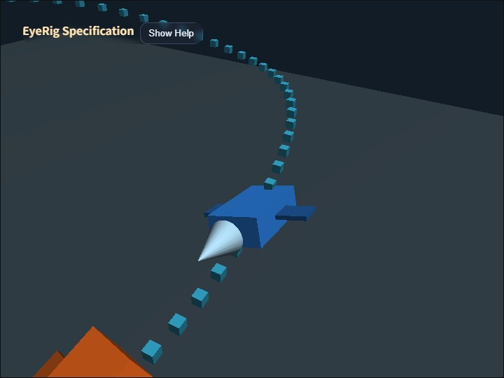

eye_rig
English | 日本語

概要
このサンプルは、base -> rod -> eye の3段構成を使うEyeRigについて、Orbit、First Person、Followの役割と、アプリケーションが作る親子階層の違いを同じシーンで確認するものです。
青いcamera vehicleとオレンジ色のtarget vehicleは、カーブ、上り下り、bankを含む同じtrackを位相をずらして走ります。OrbitとFirst Personではcamera vehicleを基準としたカメラ配置を確認し、Followではcamera vehicleに取り付けたカメラが、別に動くtarget vehicleへ視線だけを滑らかに向け続けることを確認します。
このサンプルで確認した仕様は webg/EyeRig.js へ取り込まれています。サンプルはコアの EyeRig を直接使い、Follow、回転した親の下でのOrbit座標変換、First Personの独立lookYaw入力をまとめて確認します。
実行方法
- 実行ファイルは ./eye_rig.html です
- WebGPU対応ブラウザで開き、左上のHelp panelで操作説明と現在値を確認します
/またはcanvasのダブルタップでCommandPaletteを開き、modeや設定を変更します
使用しているwebg機能
WebgApp: Screen、Space、camera rig、InputController、Message、OverlayPanel、diagnosticsを初期化するEyeRig: 三つのmode state、入力、world-to-local変換、Followの姿勢追跡を担当するCoordinateSystem: camera vehicleとcamera baseの親子変換、および独立camera anchorを構成するShape / Primitive: track markerと2台のvehicleを描画するbuildHelpPanelOptions(): 仕様と操作方法を折りたたみ可能なHelp panelへ表示するCommandPalette: mode切り替え、pause、reset、Orbit階層、Follow上方向基準の操作をまとめる
確認ポイント
Orbitでは、camera rigをcamera vehicleの子にした場合、vehicleの移動、pitch、rollがbaseへ継承されます。Hで独立camera anchorへ付け替えると、vehicleと同じ位置を移動しながら回転は継承しません。この違いがEyeRigのmodeではなく、アプリケーションが作る階層構造によることを確認します。
First Personでは、baseをcamera vehicleの後方、上方、右側へ置きます。camera bodyの前方はlocal -Z、camera vehicleの前方はlocal +Zなので、bodyYaw: 180によって両方の前方軸を一致させています。WはbodyYawで回転したbodyのlocal -Z、Dはlocal +Xへ進み、反対方向をS / Aで確認できます。ドラッグの水平差分はbodyYawではなくeyeのlookYawへ反映され、lookYawは移動方向を変えないため、vehicleの進行方向を維持したまま周囲を見られます。Q / Eではbaseを親座標系内で上下へ移動できます。
Followでは、baseはcamera vehicleの子として固定され、target vehicleの位置へ移動しません。rodはアプリケーションが決める比較的安定した基準角度を保持し、eyeはtarget vehicleを見るための動的なローカル姿勢だけを担当します。Help panelの follow dot が1に近いほど、eyeのworld前方がtarget方向へ一致しています。
Uで base / rod / world の上方向基準を切り替えると、camera vehicleがbankしたときのロール基準が変化します。追跡方向と上方向がほぼ平行な場合は、直前のright軸を対象方向へ直交投影し、直前姿勢のロール連続性を維持します。
Followの姿勢補間にはフレームレート非依存のresponse係数と最大角速度を使用します。target位置そのものを遅らせず、実際のtarget位置から求めた目標姿勢へクォータニオンで徐々に近づきます。
操作方法
1: Orbitへ切り替える2: First Personへ切り替える3: Followへ切り替えるR: 現在のmodeを初期状態へ戻すP: 2台のvehicleを一時停止または再開するH: Orbit中の親階層をvehicle回転継承と回転非継承で切り替えるU: Follow中の上方向基準をbase / rod / worldで切り替える- ドラッグ: Orbitの周回、First Personの独立視線、Followのrod基準角度を変更する
Shift + ドラッグまたは2本指ドラッグ: OrbitのPAN- ホイールまたはpinch: OrbitとFollowの基準距離を変更する
W / A / S / D: First Personのbaseを親座標系内で移動するQ / E: First Personのbaseを下降または上昇するShift: First Personの移動速度を上げる/またはcanvasダブルタップ: CommandPaletteを開く
実装ファイル
main.js: scene、vehicle軌道、mode切り替え、UI、diagnosticsを構成するeye_rig.txt: 利用者とAI向けに、目的、処理フロー、実装判断を詳しく説明するbook/06_カメラ制御とEyeRig.md: コア実装とカメラ操作の基準となる第6章